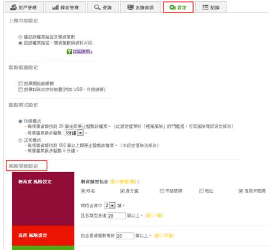
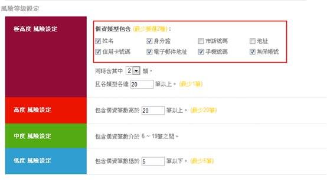
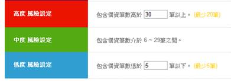

本服務將個資檔案的風險檔案分為四級，分別為極高度風險、高度風險、中度風險以及低度風險。管理者可以透過點選功能列中的設定按鈕，進入風險等級設定頁面。

（1）極高度風險設定說明：
極高風險的設定目的是，提供管理者找出同時涵蓋不同個資類型、且各類型筆數皆達一定數量的機敏檔案。
範例：A單位某稽核人員認為，一個檔案同時具備大量姓名、身分證、信用卡卡號、地址以及市話號碼這幾種個資，很有可能會是通訊錄、客戶資料的機敏檔案，並認為其中只要其中任三種同時出現20筆以上就必須要找出並進行控管，這時可採取下列設定：
- 個資類型選擇：姓名、身分證、市話號碼、地址、信用卡卡號
- 同時出現：3種
- 各類型各達：20 筆以上

（2）高度/中度/低度風險設定說明：
高、中、低風險設定是純粹依照檔案的個資數量做為判斷依據，並不在乎是否要包含不同種類的個資，管理者可以自行定義其門檻值。
範例：A單位稽核人員認為，一個檔案中超過30筆個資就該定義為高風險，且高於5筆就必須定義為中度風險。這時可採取下列設定：
- 高度風險設定：包含個資筆數高於 30 筆以上
- 中度風險設定：包含個資筆數介於 6~29 筆以上
- 低度風險設定：包含個資筆數低於 5筆以下
